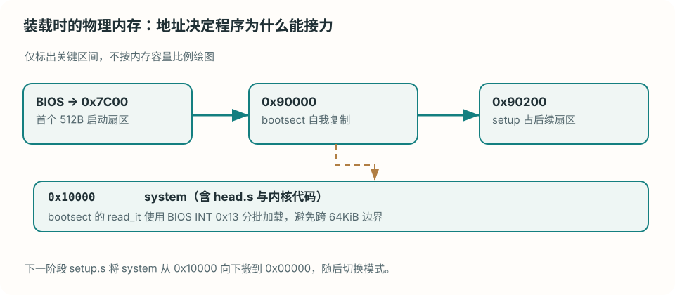

引导扇区的接力：从 0x7C00 到 0x10000
逐条跟踪 bootsect.s 如何自我搬移、读入 setup 和 system，并避免 BIOS 磁盘读取的边界问题。
BIOS 引导 · 实模式为什么引导程序先搬走自己？
传统 PC 的 BIOS 会把引导扇区读到物理地址 0x7C00，然后把控制权交给它。此时内核并未加载，CPU 仍处于 16 位实模式。引导扇区本身只有 512 字节，既要负责磁盘读取又不能覆盖即将使用的数据。
Linux 0.11 的策略很直接：先把引导扇区复制到远离初始装载区的 0x90000，再从那里继续执行。这样 BIOS 扇区原来的空间可以释放，同时 setup 和 system 可以按照约定地址装入内存。

段:偏移的算式必须算对
实模式逻辑地址通常写成 segment:offset。在没有 A20 回绕等复杂情形时，物理地址计算为：
| 段值 | 物理起始地址 | 用途 |
|---|---|---|
| 0x07C0 | 0x07C0 × 16 = 0x07C00 | BIOS 放置的 bootsect |
| 0x9000 | 0x9000 × 16 = 0x90000 | 复制后的 bootsect |
| 0x9020 | 0x9020 × 16 = 0x90200 | setup 起始 |
| 0x1000 | 0x1000 × 16 = 0x10000 | system 载入起始 |
一眼看懂 256 次字复制
原始 bootsect.s 在 start 标签下将源段设为 BOOTSEG，目标段设为 INITSEG，用 rep movw 复制 256 个 16 位字，也就是恰好 512 字节。随后用远跳转 jmpi go,INITSEG 更新代码段。
start:
mov ax,#BOOTSEG
mov ds,ax
mov ax,#INITSEG
mov es,ax
mov cx,#256
sub si,si
sub di,di
rep
movw
jmpi go,INITSEG这里的 DS:SI 是源地址，ES:DI 是目的地址，CX 是重复次数。rep movw 不负责把 CS 指向新位置，所以最后必须使用能更新代码段的远跳转。
为什么是 256 而不是 512 次？（展开核对）
movw 一次复制 16 位，也就是 2 字节；256 × 2 = 512 字节，正好覆盖一个传统扇区。
读取 setup 和 system 是两个不同的步骤
自搬移完成后，load_setup 使用 BIOS INT 0x13 从磁盘读取接下来的 SETUPLEN=4 个扇区，目标地址为 INITSEG:0x0200，对应物理 0x90200。这段读取通过进位标志判断成功与否，失败时复位磁盘并重试。
load_setup:
mov dx,#0x0000
mov cx,#0x0002
mov bx,#0x0200
mov ax,#0x0200+SETUPLEN
int 0x13
jnc ok_load_setup随后 read_it 开始将 system 装载到以 SYSSEG=0x1000 为起点的物理 0x10000。这部分不是一次固定扇区数的简单调用：它先查询每磁道扇区数，再按磁头/磁道位置和内存目标位置分批读入，避免 DMA/BIOS 数据缓冲跨越 64 KiB 段边界。
最后 jmpi 0,SETUPSEG 将控制权交给 setup.s；请注意此时仍然是实模式，尚未建立内核页表。
失败分支和真实硬件约束
0.11 原始版本把许多硬件行为写死在引导逻辑里。例如 load_setup 的磁盘读取失败会复位驱动器并继续重试；这能抵御偶发的软盘读错误，却也可能导致持续故障时无界循环。read_it 内的几何参数来自 BIOS，其假设并不适用于现代存储总线。
grep -n 'load_setup:\|read_it:\|read_track:' boot/bootsect.s
grep -n 'SETUPSEG\|SYSSEG\|ENDSEG' boot/bootsect.s
grep -n 'jmp\|jmpi' boot/bootsect.s | tail -20分析路径：先说明 INT 0x13 的输入寄存器，再看成功分支与失败分支，最后核对目标内存地址。不要把教材中的“磁盘不可靠”故事当成已经发生的实验故障。
本章停在正确的时间点
到这里，bootsect.s 完成了三件事：为自己换位置、把 setup 装入 0x90200、把 system 装入 0x10000。随后它跳向 setup，但 system 尚未被移动到 0 地址，保护模式与分页也还没有开启。
system 为什么最终要搬到 0x00000？（展开核对）
0.11 的 head.s 设计以线性/物理地址 0 为初始 32 位入口，后续初始页目录也放在 0。setup.s 先把 system 向下搬移，再进行模式切换和远跳转。
与源码逐行交叉验证
- v0.11 bootsect.s：
start、load_setup、read_it和jmpi。 - v0.11 setup.s：下一阶段的系统搬移和模式切换。
- v0.11 Makefile：
bootsect、setup与system的镜像布局。
下一章继续回答：既然 system 最初装到了 0x10000，为什么 startup_32 最后能从 0 地址执行？